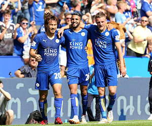
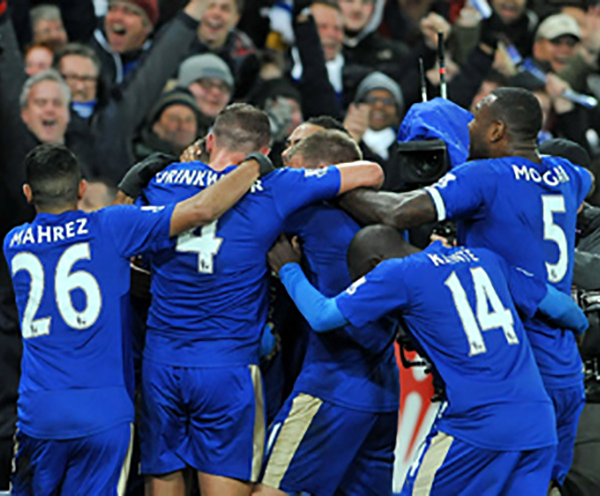
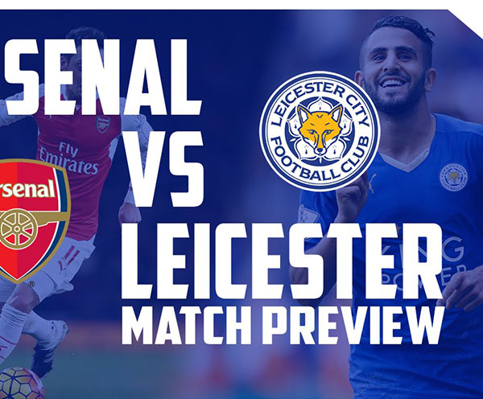
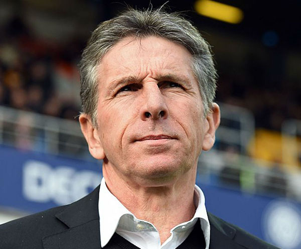

Leicester City Football Club is an English professional football club based at the King Power Stadium in Leicester.[2] They compete in the Premier League, England's top division of football.The club was founded in 1884 as Leicester Fosse F.C.,[3] playing on a field near Fosse Road. They moved to Filbert Street in 1891, were elected to the Football League in 1894 and adopted the name Leicester City in 1919. They moved to the nearby Walkers Stadium in 2002,[4] which was renamed the King Power Stadium after a change of ownership in 2011.Leicester City won the 2015–16 Premier League, their first top-level football championship. They are one of only six clubs to have won the Premier League since its inception in 1992.
| Tickets Available | Prices | Location | Premium |
|---|---|---|---|
| Yes | $20 | East Stand | Yes |
| Yes | $25 | South Stand | No |
| No | $30 | North Stand | Yes |
The club have been FA Cup finalists four times, in 1948–49, 1960–61, 1962–63 and 1968–69. This is a tournament record for the most defeats in the final without having won the competition. Leicester have several promotions to their name, two play-off final wins, and one League One title. In 1971, they won the FA Community Shield, and in 2016, they were runners up. The club have also won the League Cup three times in 1964, 1997 and 2000, as well as being runners up in 1965 and 1999. Additionally, Leicester City have competed in European football, with their appearances coming in the 1961–62 European Cup Winners' Cup, 1997–98 UEFA Cup, 2000–01 UEFA Cup, and most recently the 2016–17 UEFA Champions League, reaching the quarter-finals of the competition in that year.
Claude Puel’s tenure as Southampton manager ended with a home defeat by Stoke City and now he will attempt to avenge that and extend his positive start with Leicester City. It will be interesting to see whether he changes the lineup that defeated Everton last Sunday. Stoke also go into the game in high spirits and hope to achieve back-to-back league wins for the first time this season.
With over 5 million players, Fantasy Premier League is the biggest Fantasy Football game in the world. The top 4,194,304 scorers in Gameweek 16 will enter the first round. If there are more than 4,194,304 qualifiers then there will be a random draw amongst the lowest scorers to see who qualifies. Kid A qualified for the cup with a Gameweek rank of 1,297,010.
Claude Puel is a French football manager and former player who is currently the manager of Premier League club Leicester City. He spent his entire playing career with AS Monaco, before becoming manager of the club, leading them to the league title in his first full season in charge. He has also managed Lille, Lyon, Nice...
{kind=link}
{kind=link}
{kind=link}
{kind=link}